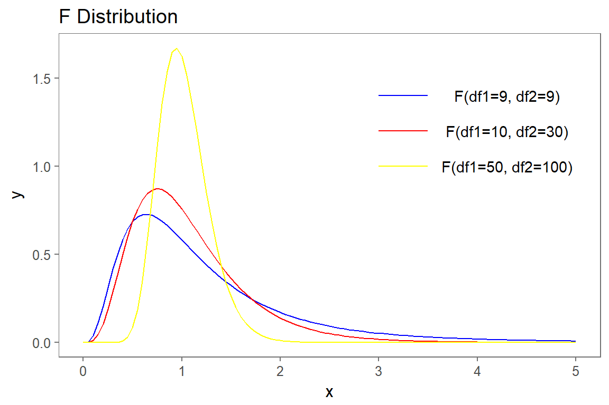
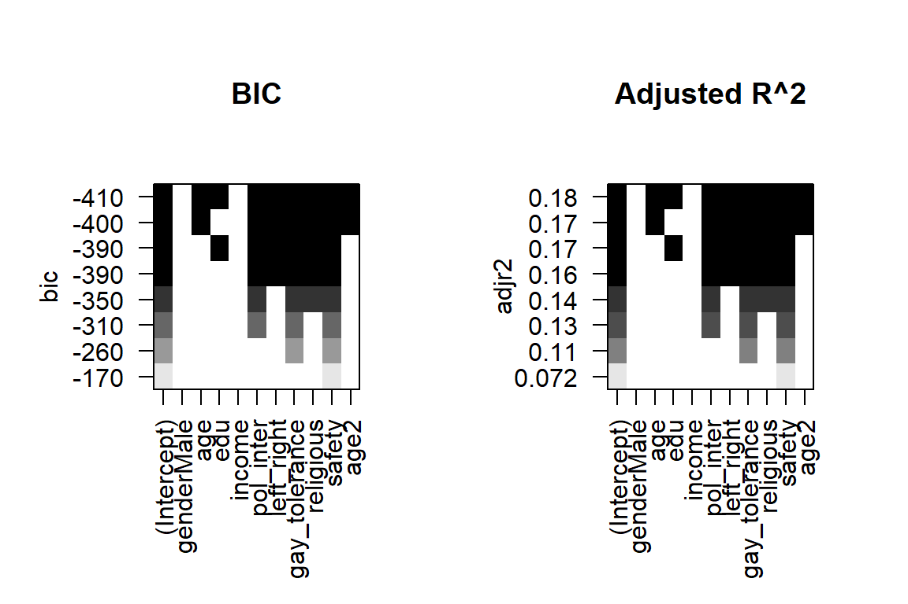
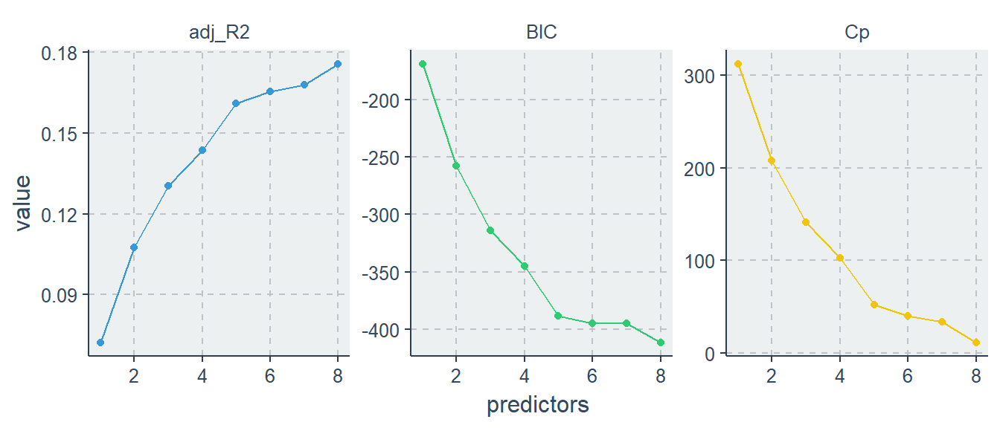

4 LM Modellauswahl
# load data
load(url('https://github.com/systats/workshop_data_science/raw/master/Rnotebook/data/ess_workshop.Rdata'))
# filter data
library(dplyr)
ess_ger <- ess %>%
dplyr::filter(country == "DE") %>%
mutate(age2 = age*age)
fit0 <- lm(imm_poor ~ 1, data = ess_ger)
fit1 <- lm(imm_poor ~ left_right + vote_right, data = ess_ger)
fit2 <- lm(imm_poor ~ left_right + vote_right + edu + age + gender, data = ess_ger)
library(texreg)
screenreg(list(fit0, fit1, fit2))
==================================================
Model 1 Model 2 Model 3
--------------------------------------------------
(Intercept) 3.80 *** 4.33 *** 4.44 ***
(0.02) (0.04) (0.07)
left_right -0.11 *** -0.10 ***
(0.01) (0.01)
vote_right1 -0.57 *** -0.56 ***
(0.08) (0.08)
edu 0.04 ***
(0.01)
age -0.01 ***
(0.00)
genderMale -0.01
(0.03)
--------------------------------------------------
R^2 0.00 0.09 0.13
Adj. R^2 0.00 0.09 0.12
Num. obs. 2813 2734 2716
RMSE 0.85 0.80 0.79
==================================================
*** p < 0.001, ** p < 0.01, * p < 0.05#htmlreg(list(fit0, fit1, fit2))
#texreg(list(fit0, fit1, fit2))Als nächstes wollen wir die Anpassung eines Modells an die Daten testen. Das wird meistens als Modellgüte oder goodness of fit bezeichnet. Jede Modellfamilie hat ihre eigene Teststatistiken, für Lineare Regression sind das
- \(R^2\)
- \(R^2_{adj}\)
- Standardschätzfehler (RSE)
- F-Statistik
Zwar werden diese Maße in der Praxis dazu verwendet Aussagen über ein spezifisches Modell zu erhalten, allerdings sind diese nur zum Modellvergleich geeignet. Wenn also mehrere Regressionsmodelle geschätzt wurden, kann somit das beste Modell identifiziert werden. Zuerst jedoch werden die drei Statistiken einzeln vorgestellt. Eine tidy dataframe der berechneten Gütemaße kann mit broom abgerufen werden.
broom::glance(fit2)## r.squared adj.r.squared sigma statistic p.value df logLik
## 1 0.1264412 0.1248294 0.7867321 78.45048 4.807338e-77 6 -3199.354
## AIC BIC deviance df.residual
## 1 6412.707 6454.056 1677.347 27104.1 Gütemaße
Die nachfolgend vorgestellten Gütemaße sind nicht dazu geeignet inhaltlich interpretiert zu werden. Vielmehr werden sie dazu genutzt um eine Reihe von Modellen (nested) mit einander zu vergleichen.
4.1.1 R Squared
Das Bestimmheitsmaß \(R^2\) gibt den Anteil der durch die Regression ausgeschöpften (erklärten) Varianz an der Gesamtvarianz der abhängigen Variablen Y an. Dazu wird das spezifizierte Modell mit dem dazugehörigen Nullmodell (Referenzmodell) verglichen. Das Verhältnis hat die schöne Eigenschaft, dass \(R^2\) in den Grenzen \([0 \geq R^2 \geq 1]\) liegt und als PRE-Maß (Proportional Reduction in Error) interpretiert werden kann.
summary(fit2)$r.squared## [1] 0.1264412Das vorliegende statistische Modell kann knapp 60% der Varianz im Zensur Index “erklären/ ausschöpfen”. Diese Interpretation ist weit verbreitet, obwohl sie viele Probleme einfach ausblendet. Zum Ersten wird durch das statistische Modell keine Erklärungsleistung geliefert, sondern nur Korrelationen und Assoziationen berichtet. Inhaltliche Schlüsse können erst in Verbindung mit Hypothesen gezogen werden. Und Zweites erweißt sich das \(R^2\) als inkonsistent, da es durch Faktoren wie die Größe der Fehlervarianz \(\sigma^2\) oder der Range der Variablen beeinflusst wird. Dieser Blog Post zeigt mittels Simulationen die empirischen Defizite von \(R^2\).
Zur Schätzlogik: Das Nullmodell welches als Referenz dient entspricht dem y-Mittelwert (\(\bar y\)). Da keine Prädiktoren im Modell vorhanden sind, wird lediglich der Intercept \(\beta_0\) und damit die Gesamtvarianz um den y-Mittelwert errechnet.
\[y_i = \beta_0 + \varepsilon_i = \bar y + \varepsilon_i\]
Zum besseren Verständnis werden die Varianzanteile wie folgt definiert:
| TSS\(\;\;\;\) | Total Sum of Squares | Die y-Gesamtvarianz |
| MSS | Model Sum of Squares | Die durch die Regression gebundene Varianz |
| RSS | Residual Sum of Squares \(\;\;\;\) | Fehlervarianz |
Das \(R^2\) wird dann als Verhältnis zwischen der Varianz der geschätzten Werte \(s^2_{\hat m}\) (Restriktives Modell) und der Gesamtvarianz von y \(s^2_y\) (Nullmodell) berechnet.
\[R^2 = \frac{s^2_{\hat m}}{s^2_y} = \frac{\sum(\hat y_i - \bar y)^2}{\sum (y_i-\bar y)^2} = \frac{MSS}{TSS}\]
Erst wird die Modellvarianz (MSS), dann die Gesamtvarianz von y (TSS) kalkuliert und anschließend verglichen.
y <- ess_ger$income
f <- fit2$fitted.values # extract fitted (or predicted) values from model
mss <- sum((f - mean(y, na.rm = T))^2, na.rm = T) # sum of squared fitted-value deviations
tss <- sum((y - mean(y, na.rm = T))^2, na.rm = T) # sum of squared original-value deviations
r2 <- mss / tss # r-squared
r2## [1] 0.5899711\(R^2\) kann auch aus der Residualvarianz (RSS) gebildet werden
\[ R^2 = 1 - \frac{\sum(y_i - \hat y_i)^2}{\sum (y_i-\bar y)^2} = 1- \frac{RSS}{TSS}\]
Die Modelvarianz der geschätzten Werte ergibt sich aus dem Produkt des quadrierten Steigungsparameter und der x-Varianz
\[s^2_{\hat m} = s^2_{\beta_0 + \beta_1x} = s^2_{\beta_1x}= \hat \beta^2_1 s^2_x\]
Dadurch kann \(R^2\) auch als quadratische, standardisierte Steigung verstanden werden.
\[R^2 = \hat \beta^2_1 \frac{s^2_x}{s^2_y}\]
Daraus resultiert die quadrierte Korrelation als \(R^2\).
\[R^2 = \left(\frac{cov(xy)}{s_xs_y}\right)^2\]
Leicht lässt sich beweisen, dass sich das \(R^2\) nicht ändert, ganz gleich ob x auf y oder y auf x regressiert wird. F-Tests, R2, and Other Distractions by Shalizi.
x1 <- 1:20 # independent variable
y <- 2 + 1/2*x1 + rnorm(n = 20, mean = 0, sd = 3) # dependent variable; function of x with random error
summary(lm(y ~ x1))$r.squared == summary(lm(x1 ~ y))$r.squared## [1] FALSEDa die Residuen eines linearen Regressionsmodell unkorreliert mit dem Modell geschätzt werden, kann leicht nachgewiesen werden, dass der folgende Zähler der Modelvarianz \(s^2_{\hat m}\) gleicht.
\[R^2 = \frac{s_y^2 - \hat \sigma^2}{s^2_y} \]
4.1.2 Adjusted R Squared
Wenn multivariates Regressionsmodell geschätzt wird, steigt das \(R^2\) mit jeder zusätzlichen Variablen automatisch an (außer, wenn dessen Regressionskoeffizient genau Null ist, was so gut wie nie der Fall ist). Sollte also kein Zusammenhang zwischen x und y bestehen, so ist die Kovariation trotzdem so gut wie immer größer als Null \(cov(x, y) > 0\). D.h. die geschätzten zusätzlichen Parameter sind nicht 0 und verzerren dadurch das \(R^2\) artifiziell gegen 1. Zur Lösung wurde das Adjusted \(R^2\) eingeführt, welches eine Korrektur (Penalty) für zusätzliche Variablen im Modell vornimmt.
\[R^2_{\text{adj}} = 1 - \left(\frac{n-1}{n-p-1}\right)(1-R^2)\]
oder
\[R^2_{\text{adj}} = R^2 - \left(\frac{p}{n-p-1}\right)(1-R^2) \]
Die Korrektur basiert auf der Anzahl der Beobachtungen \(n\), \(p\) die Zahl der x Variablen und zuletzt der Fehlervarianz (\(1-R^2\)) Quora.
4.1.3 RSE
Der Standardfehler des gesamten Modells (Residual Standard Error RSE) beschreibt die durchschnittliche Standardabweichung der Residuen \(\varepsilon_i\) von der Regressionsgerade. Man spricht auch vom Standardschätzfehler. Die Formel dazu
\[RSE = \sqrt{\frac{1}{n-2}\sum^n_{i=1} (y_i - \hat y_i)^2} = \sqrt{\frac{1}{n-2}\sum^n_{i=1} \varepsilon^2} = \sqrt{\frac{\sigma^2}{n-2}} = \sigma\]
n <- length(fit2$residuals)
sqrt(1/(n-2)*sum(fit2$residuals^2))## [1] 0.7861521sigma(fit1)## [1] 0.8020344Der durchschnittliche Fehler in der Metrik der abhängigen von der Vorhersage beträgt momentan 2.64 Einkommenspunkte.
4.1.4 F-Test
Der F-Test ist ein gemeinsamer Hypothesentest für mehrere Koeffizienten zugleich. Von einem gemeinsamen Hypothesentest sprechen wir, wenn gleichzeitig Restriktionen für mehrere Steigungsparameter eines Modells (mit \(p\) Prädiktoren) getestet werden, d.h.
\[H_0: \;\; \beta_1 = ... = \beta_p = 0\] \[H_1:\;\; \beta_1 = ... = \beta_p \neq 0\]
Die Nullhypothese unterstellt also alle Parameter sind gleich NULL. Sind alle Parameter tatsächlich NULL? Allerdings entwickeln ForscherInnen diesbezüglich keine Alternativhypothese, da sie in der Regel nicht daran interessiert sind ob zumindest einer der Parameter signifikant von Null abweicht. Die Formel für ein Modell lautet
\[F = \frac{1}{2} \frac{t_1^2 + t_2^2 - 2\hat p_{t_1,t_2} t_1 t_2}{1-\hat p^2_{t_1,t_2}}\]
Die Teststatistik ist unter der Nullhypothese (\(t_1\) , \(t_2\) sind unabhängig standard-normalverteilt) \(F_{p,\infty}\)-verteilt mit der realisierten Teststatistik \(f\) und dem p-Wert
\[p-Wert = P[F_{p,\infty} > f] \]
Die F-Statistik misst also den (relativen) Anstieg in der residualen Varianz wenn man vom Nullmodel zum restriktiven Modell geht. Die F-Statistik ist immer positiv. Die Teststatistik wird wie folgt realisiert.
\[F = \frac{(TSS-RSS)/p}{RSS/(n-p-1)} \]

4.2 Modellvergleich
Welches ist das beste?
In der sozialwissenschaftlichen Forschungspraxis werden meistens mehrere multivariate Modelle mit einander verglichen, die logisch aufeinander aufgebaut sind. Wird in das Modell 1 um eine weitere Variable erweitert, spricht man von nested Models bzw. von einem sequenziellen Vorgehen.
Modell 0 bis 3 zeigt eine sequenziellen Ansatz. Modell 0 schätzt nur den Intercept (Mittelwert von Y), da keine X-Variablen beinhaltet sind. Jedes weitere Model beinhaltet eine weitere Variable. Dadurch kann überprüft werden wie mit steigender Modellkomplexität (mehr \(\beta\)-Parameter zu schätzen) die Parameter variieren (oder stabil bleiben).
All models are worng some are usedul.
| Statistik | \(\;\;\;\) | Kriterium |
|---|---|---|
| RSE | Je kleiner desto besser. | |
| \(R^2\) | Je höher desto besser. | |
| \(R^2_{adj}\) | Je höher desto besser. | |
| F-Statistik | Je höher desto besser. |
library(broom)
rbind(
c("Nullmodel", glance(fit0)),
c("Model 1", glance(fit1)),
c("Model 2", glance(fit2))
)## r.squared adj.r.squared sigma statistic p.value
## [1,] "Nullmodel" 0 0 0.8451316 NA NA
## [2,] "Model 1" 0.09195654 0.09129155 0.8020344 138.2826 6.231784e-58
## [3,] "Model 2" 0.1264412 0.1248294 0.7867321 78.45048 4.807338e-77
## df logLik AIC BIC deviance df.residual
## [1,] 1 -3517.65 7039.301 7051.185 2008.464 2812
## [2,] 3 -3274.746 6557.493 6581.147 1756.741 2731
## [3,] 6 -3199.354 6412.707 6454.056 1677.347 27104.3 Best Subset Selection
Wenn man daran interessiert ist den Zusammenhang zwischen > 30 x-Variablen und einer y-Variable zu bestimmen, sollte automatische Variablenauswahl bzw. Best Subset Selection zu Einsatz kommen. Dazu wird eine separate OLS Regression für jede Kombination der \(p\) Prädiktoren berechnet. Die Schätzung umfasst alle möglichen bivariaten (nur ein Prädiktor) Modelle p, sowie alle weiteren \(\left(\begin{array}{c}p \\ 2\end{array} \right) = p(p-1)/2\) mit zwei unabhängigen Variablen usw. Abschließend wird aus allen geschätzten Modellen das Modell mit dem besten fit gewählt.
Genauer betrachtet umfasst das automatische Selektionsverfahren drei Schritte:
Schritt 1: Zuerst wird das Nullmodel \(M_0\) ohne Prädiktoren geschätzt.
Schritt 2: Für \(k = 1,2,...,p\):
- schätze alle \(\left(\begin{array}{c}p \\ 2\end{array} \right)\) möglichen Modellkombinationen mit genau \(k\) Prädiktoren.
- Dann wähle aus diesen Modellen das best Geschätzte bezogen auf den kleinsten Fehler (RSE) oder dem größten \(R^2\) und bezeichne es als \(M_k\).
Schritt 3: Abschließend wähle aus den \(M_0,M_k,...,M_p\) Modellen das “aller” beste Modell durch crossvalidated prediction error, \(C_p\), \(AIC\), \(BIC\) oder \(R^2_{adj}\).
# install.packages("leaps")
library(leaps)
ess_sub <- ess_ger %>%
select(-country, -EU_accession, -pc, -region, -party_ger, -fake_refugee, -party_right, -vote_right, -imm_poor) %>%
na.omit()
best_subset <- regsubsets(
imm_econ ~ .,
data = ess_sub,
nvmax = 8,
nbest = 1
)
summary(best_subset)## Subset selection object
## Call: regsubsets.formula(imm_econ ~ ., data = ess_sub, nvmax = 8, nbest = 1)
## 10 Variables (and intercept)
## Forced in Forced out
## genderMale FALSE FALSE
## age FALSE FALSE
## edu FALSE FALSE
## income FALSE FALSE
## pol_inter FALSE FALSE
## left_right FALSE FALSE
## gay_tolerance FALSE FALSE
## religious FALSE FALSE
## safety FALSE FALSE
## age2 FALSE FALSE
## 1 subsets of each size up to 8
## Selection Algorithm: exhaustive
## genderMale age edu income pol_inter left_right gay_tolerance
## 1 ( 1 ) " " " " " " " " " " " " " "
## 2 ( 1 ) " " " " " " " " " " " " "*"
## 3 ( 1 ) " " " " " " " " "*" " " "*"
## 4 ( 1 ) " " " " " " " " "*" " " "*"
## 5 ( 1 ) " " " " " " " " "*" "*" "*"
## 6 ( 1 ) " " " " "*" " " "*" "*" "*"
## 7 ( 1 ) " " "*" " " " " "*" "*" "*"
## 8 ( 1 ) " " "*" "*" " " "*" "*" "*"
## religious safety age2
## 1 ( 1 ) " " "*" " "
## 2 ( 1 ) " " "*" " "
## 3 ( 1 ) " " "*" " "
## 4 ( 1 ) "*" "*" " "
## 5 ( 1 ) "*" "*" " "
## 6 ( 1 ) "*" "*" " "
## 7 ( 1 ) "*" "*" "*"
## 8 ( 1 ) "*" "*" "*"par(mfrow=c(1,2))
plot(best_subset, scale="bic", main="BIC")
plot(best_subset, scale="adjr2", main="Adjusted R^2")
results <- summary(best_subset)
library(ggthemr)
library(ggplot2)
ggthemr("flat")
tibble(predictors = 1:8,
adj_R2 = results$adjr2,
Cp = results$cp,
BIC = results$bic) %>%
tidyr::gather(statistic, value, -predictors) %>%
ggplot(aes(predictors, value, color = statistic)) +
geom_line(show.legend = F) +
geom_point(show.legend = F) +
facet_wrap(~ statistic, scales = "free")
#ggthemes::theme_hc()